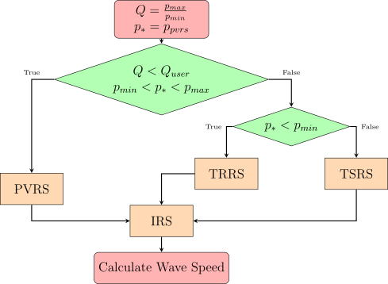

In order to find the speeds \(u_*\), \(a_{*L}\), and \(a_{*R}\), \(\boldsymbol {U}_{*R}\) and \(\boldsymbol {U}_{*L}\) need to be found. Toro [29] provides an adaptive Riemann solver outlined here that has been modified to include an iterative scheme to find the star states. The adaptive Riemann solver starts by defining a switching parameter \(Q_{user}\) and a switching condition parameter \(Q\) defined as \begin {equation} Q = \frac {p_{max}}{p_{min}} \end {equation} and the \(p_*\) state taken from the Primitive Variable Riemann Solver (PVRS) of Section 3.4.1 as \begin {equation} p_* = p_{pvrs} \end {equation} A choice of \(Q_{user} = 2\) results in robust and efficient schemes that can handle most Riemann problems [29]. If \begin {equation} Q < Q_{user} \end {equation} and \begin {equation} p_{min} < p_* < p_{max} \end {equation} then the PVRS is used for the star state calculations. If \begin {equation} p_* < p_{min} \end {equation} then the Two Rarefaction Riemann Solver (TRRS) of Section 3.4.2 is used. If none of the conditions is met then the Two Shock Riemann Solver (TSRS) of Section 3.4.3 is used for the star state calculations. In all cases, the value of \(p_*\) is an initial guess for the following Iterative Riemann Solver (IRS) using the Newton-Raphson method.
\begin {equation} f_k = \begin {cases} \left (p_* - p\right ) \sqrt {\frac {A_k}{p_* + B_k}} \,\,\,\, \textrm {if} \,\,\,\, p_* > p \,\,\,\, \left (\textrm {shock}\right )\\ \frac {2 a_k}{\gamma - 1} \left (\frac {p_*}{p}\right )^{\frac {\gamma - 1}{2 \gamma - 1}}\,\,\,\, \textrm {if} \,\,\,\, p_* \le p \,\,\,\, \left (\textrm {rarefaction}\right ) \end {cases} \end {equation} \begin {equation} f^{\prime }_k = \begin {cases} \sqrt {\frac {A_k}{p_* + B_k}} \left [1 - \frac {p_* - p}{ 2 \left (B_k + p\right )}\right ] \,\,\,\, \textrm {if} \,\,\,\, p_* > p \,\,\,\, \left (\textrm {shock}\right )\\ \frac {1}{\rho _k a_k} \left (\frac {p_*}{p}\right )^{-\frac {\gamma + 1}{2 \gamma }} \,\,\,\, \textrm {if} \,\,\,\, p_* \le p \,\,\,\, \left (\textrm {rarefaction}\right ) \end {cases} \end {equation} Where \(A_k\), \(B_k\), and \(a_k\) are \begin {equation} A_k = \frac {2}{\rho _k \left (\gamma + 1\right )} \end {equation} \begin {equation} B_k = p \frac {\gamma - 1}{\gamma + 1} \end {equation} \begin {equation} a_k = \sqrt {\frac {\gamma p}{\rho _k}} \end {equation} then \(f\) and \(f^{\prime }\) are \begin {equation} f = f_L + f_R \,\,\,\, ; f^{\prime } = f^{\prime }_L + f^{\prime }_R \end {equation} The Newton-Raphson scheme for an iteration \(n\) is then \begin {equation} p_{*,n+1} = p_{*,n-1} - \frac {f_n}{f^{\prime }_n} \end {equation} The wave speeds can then be calculated according to the PVRS, TRRS, or TSRS. In the case where the TRRS or TSRS is used, and the wave system is a two rarefaction or two shock system, respectively, the \(p_*\) equations are exact and will result in only one iteration.

To estimate the wave speeds using the PVRS, the following star states are calculated \begin {equation} \label {eq:PVRS} \begin {rcases} p_* = \frac {1}{2} \left (p_L + p_R\right ) + \frac {1}{2} \left (u_L - u_R\right ) \bar {\rho } \bar {a}\\ u_* = \frac {1}{2} \left (u_L + u_R\right ) + \frac {1}{2} \left (p_L - p_R\right ) / \left (\bar {\rho } \bar {a}\right )\\ p_{*L} = \rho _L - \left (u_L - u_*\right )\bar {\rho } / \bar {a}\\ p_{*R} = \rho _R - \left (u_* - u_R\right )\bar {\rho } / \bar {a} \end {rcases} \end {equation} where \(\bar {\rho }\) and \(\bar {a}\) are \begin {equation} \bar {\rho } = \frac {1}{2} \left (\rho _L + \rho _R\right ) \, , \,\,\,\, \bar {a} = \frac {1}{2} \left (a_L + a_R\right ) \end {equation} the speeds of sound are calculated as \begin {equation} a_{*L} = \sqrt {\frac {\gamma p_*}{\rho _{*L}}} \end {equation} \begin {equation} a_{*R} = \sqrt {\frac {\gamma p_*}{\rho _{*R}}} \end {equation}
To estimate the wave speeds using the TRRS, the initial guess for the pressure \(p_*\) is calculated according to \begin {equation} p_* = \left [\frac {a_L + a_R - \frac {\gamma - 1}{2} \left (u_R - u_L\right )}{a_L / p_L^z + a_R / p_R^z}\right ]^{\frac {1}{z}} \end {equation} where \(z\) is given by \begin {equation} z = \frac {\gamma - 1}{2 \gamma } \end {equation} the speeds of sound and the particle velocities in the star region are given by \begin {equation} a_{*L} = a_L \left (p_* / p_L\right )^z \, , \,\,\,\, u_* = u_L + \frac {2}{\gamma - 1} \left (a_L - a_{*L}\right ) \end {equation} \begin {equation} a_{*R} = a_R \left (p_* / p_R\right )^z \, , \,\,\,\, u_* = u_R + \frac {2}{\gamma - 1} \left (a_R - a_{*R}\right ) \end {equation}
To estimate the speeds with the TSRS, a pressure function is defined as \begin {equation} f\left (p\right ) = \left (p - p_L\right ) g_L\left (p\right ) + \left (p - p_R\right ) g_R\left (p\right ) + u_R - u_L = 0 \end {equation} where \begin {equation} g_K\left (p\right ) = \left [\frac {A_K}{p + B_K}\right ]^{\frac {1}{2}} \end {equation} and \(A_K\) and \(B_K\) are given by \begin {equation} A_K = \frac {2}{\left (\gamma + 1\right ) \rho _K} \end {equation} \begin {equation} B_K = \left (\frac {\gamma - 1}{\gamma + 1}\right ) \rho _K \end {equation} and \(K=L,R\). Assuming an estimate \(p_0\) for the solution \begin {equation} p_0 = max\left (0,p_{pvrs}\right ) \end {equation} where \(p_{pvrs}\) is the \(p_*\) value found according to Equation 3.53, then the following is obtained \begin {equation} \left (p - p_L\right ) g_L\left (p_0\right ) + \left (p - p_R\right ) g_R\left (p_0\right ) + u_R - u_L = 0 \end {equation} The solution of which is \begin {equation} p_* = \frac {g_L\left (p_0\right ) p_L + g_R\left (p_0\right ) p_R - \left (u_R - u_L\right )}{g_L\left (p_0\right ) + g_R\left (p_0\right )} \end {equation} A solution for \(u_*\) can then be derived as \begin {equation} u_* = \frac {1}{2} \left (u_L + u_R\right ) + \frac {1}{2} \left [\left (p_* - p_R\right ) g_R\left (p_0\right ) - \left (p_* - p_L\right ) g_L\left (p_0\right )\right ] \end {equation} The solutions for \(\rho _{*L}\) and \(\rho _{*R}\) are then \begin {equation} \rho _{*L} = \rho _L \left [\frac {\frac {p_*}{p_L} + \frac {\gamma - 1}{\gamma + 1}}{\frac {\gamma - 1}{\gamma + 1}\frac {p_*}{p_L} + 1}\right ] \, , \,\,\,\, \rho _{*R} = \rho _R \left [\frac {\frac {p_*}{p_R} + \frac {\gamma - 1}{\gamma + 1}}{\frac {\gamma - 1}{\gamma + 1}\frac {p_*}{p_R} + 1}\right ] \end {equation}